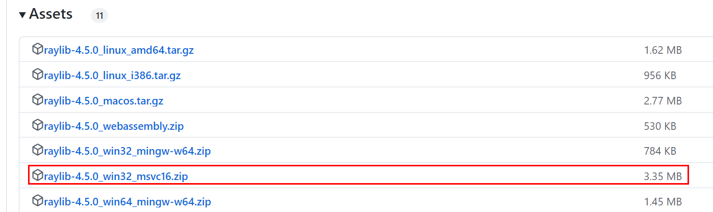

3.raylibのダウンロード
まず、raylibのgithubページの「Releases」ページにアクセスします。
raylibのgithubのReleasesページ
https://github.com/raysan5/raylib/releases
そのページから、raylibの
msvc向けのzipファイルをダウンロード
します。raylibのバージョンが4.5の場合、
64ビット版
は「raylib-4.5.0_
win64
_
msvc
16.zip」、32ビット版は「raylib-4.5.0_win32_msvc16.zip」をダウンロードします。
 その後、ダウンロードしたzipファイルを任意のフォルダに解凍してください。